1º DAW - Programación - UT 2
Orientaciones
Orientaciones
Se introducirán los conceptos básicos de la programación, el lenguaje y el entorno de programación a usar.
Esta unidad es eminentemente teórica, por la que se recomienda que se haga un primer estudio superficial, entendiendo los conceptos y en un segundo estudio profundizar en los conocimientos de forma más profunda. Se introducirán los primeros ejemplos de programas para explicar el uso del entorno de programación que utilizaremos todo el año.
No es necesario ningún tipo de conocimiento anterior y el nivel de partida es básico, siendo accesible a todos el alumnado.
2.1 Introducción
La elección de un lenguaje de programación para aprender los entresijos de la programación es una elección muy importante y que no se debe tomar a la ligera. Tradicionalmente se usaban lenguajes muy estructurados para el aprendizaje como era Pascal o Basic, pero con el tiempo se impuso java como lenguaje de aprendizaje. Si bien, java está ampliamente extendido, no es un lenguaje sencillo ni fácil de aprender, la curva de aprendizaje al principio es muy grande, lo que hace difícil la aproximación a la programación a través de este entorno. No quiero decir ni mucho menos que no sea posible, sino que no es el lenguaje para aprender para neófitos.
Por el contrario, Python incorpora muchas características que hacen que su curva de aprendizaje sea más plana y por tanto más fácil de aprender por parte de los nuevos programadores. De hecho, una gran mayoría de centros de estudios y universidades están utilizando ya Python como el lenguaje de aprendizaje para la programación.
Después de más de veinte años programando, y pasando por muchos lenguajes diferentes: C, C++, Lisp, Cobol, Pascal, Delphi, Basic, C#, Java, PHP, Python y Perl entre otros, me parece que Python reúne todas las características para que un alumno aprenda programación de manera sencilla, e impone restricciones que evitarán vicios difícilmente subsanables posteriormente, añadiendo una gran cantidad de utilidades y herramientas.
Un último dato para afianzar más que es el lenguaje actual que mejor se adapta a la enseñanza, en el año 2020 ha pasado a ser el segundo lenguaje más utilizado en proyecto, por delante de Java, continuando con su ascenso meteórico desde su creación.
2.2. Historia de Python
Guido Van Rossum es el creador y responsable de que Python exista. Se trata de un informático de origen holandés que fue el encargado de diseñar Python y de pensar y definir todas las vías posibles de evolución de este popular lenguaje de programación.
En las navidades de 1989 Van Rossum decidió empezar un nuevo proyecto como pasatiempo personal. Pensó en darle continuidad a ABC, un lenguaje de programación que se desarrolló en el mismo centro en el que estaba trabajando. ABC fue desarrollado a principios de los ochenta como alternativa a BASIC. Se trata de un lenguaje pensado para principiantes por su facilidad de aprendizaje y uso. Su código era compacto pero legible. Sin embargo, el proyecto no llegó mucho más lejos por las limitaciones del hardware de la época, así que Van Rossum decidió darle una segunda vida a su idea y partiendo de la base que tenía, empezó a trabajar en Python.
¿Por qué se llama Python? El nombre de este lenguaje de programación es en honor a los Monty Python, el famoso grupo de cómicos británicos.
2.2.1 Versiones
La versión 1.0, que se publicó en enero de 1994, la versión 2.0 se publicó en octubre de 2000 y la versión 3.0 se publicó en diciembre de 2008. Esta primera versión de Python ya incluía clases con herencias, manejo de excepciones, funciones y una de sus características fundamentales: funcionamiento modular. Esto permitía que fuese un lenguaje mucho más limpio y accesible para la gente con pocos conocimientos de programación, una característica que se mantiene hasta el día de hoy. Hasta el año 2018, el desarrollo de este popular lenguaje de programación estaba dirigido personalmente por Van Rossum, pero decidió apartarse y, desde 2019, son cinco las personas que deciden cómo evoluciona y se desarrolla Python. Un consejo que se renueva de forma anual.
Versión 1.0
Python es un lenguaje de programación que Van Rossum empezó a desarrollar mientras trabajaba en CWI. Fue este centro de investigación quien liberó, en 1995 la versión 1.2 de Python. A partir de este momento, ya desvinculado de CWI, Van Rossum hizo aún más accesible el código y para el año 2000, el equipo principal de desarrolladores de Python se cambió a BeOpen.com para formar el equipo de BeOpen Python Labs.
Python 1.6.1 es exactamente lo mismo que 1.6, con algunos bugs arreglados y una nueva licencia compatible con GPL. La versión 1.6 de Python tuvo algunos problemas con su tipo de licencia hasta que la Free Software Foundation (FSF) consiguió cambiar Python a una licencia de Software Libre, que lo haría compatible con GPL.
Versión 2.0
En octubre del año 2000 se publica la segunda versión de Python. Una nueva versión en la que se incluyó la generación de listas, una de las características más importantes del lenguaje.
En 2001, se crea la Python Software Foundation, la cual a partir de Python 2.1 es dueña de todo el código, documentación y especificaciones del lenguaje. A mayores de esta nueva característica, esta nueva versión de Python también incluyó un nuevo sistema gracias al cual los programadores eran capaces de hacer referencias cíclicas y, de esta manera, Python podía recolectar basura dentro del código.
Versión 3.0
La última gran actualización de la historia de Python se produjo en el año 2008 con el lanzamiento de la versión 3.0, que venía a solucionar los principales fallos en el diseño de este lenguaje de programación.
Aunque Python mantiene su filosofía en esta última versión, como lenguaje de programación ha ido acumulando formas nuevas y redundantes de programar un mismo elemento. De ahí la necesidad de nuevas versiones que eliminen estos constructores duplicados.
Python 3.0 rompe la compatibilidad hacia atrás del lenguaje, ya que el código de Python 2.x no necesariamente debe correr en Python 3.0 sin modificación alguna. La última actualización de la versión 3 de Python a la hora de escribir estos apuntes se trata de la versión 3.9.
2.3. Características de Python
- Es un lenguaje fuertemente tipado, en concreto todos los elementos son objetos: los tipos, las funciones, etc.
- Es un lenguaje con tipado dinámico, lo que significa que el tipo de una variable se puede cambiar durante la ejecución. Esto implica que la definición de una variable no tendrá nunca un tipo, pero será necesaria su inicialización antes de usarla.
- El lenguaje incorpora un gestor de paquetes propio: pip que se utiliza para añadir funcionalidades al sistema. Se accederá desde una sesión de consola.
pip search cadena -> buscar paquetes
pip install paquete -> instalar un paquete
pip install –U paquete -> actualizar un paquete
pip uninstall paquete -> desinstalar un paquete
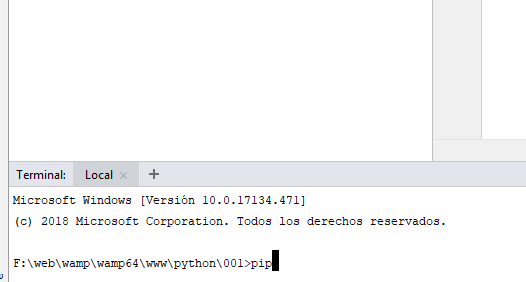
- Es un lenguaje interpretado, pero que se compila a una representación intermedia: byte code. Es un concepto similar a Java.
- El lenguaje está dirigido a todos los sistemas. Web, desktop, Programación de sistemas, Big data, programación científica.
- Es un lenguaje que se ejecuta en diversos sistemas operativos: Unix, Windows, etc.
- Se caracteriza por tener una gran librería. Es imprescindible estudiar la documentación.
- El lenguaje incorpora una gestión automática de recursos y de memoria, con un recolector de la misma.
- Es un lenguaje libre con varias implementaciones, la más conocida es la basada en C.
- El lenguaje impone pocas restricciones al programador.
- El lenguaje incorpora las facilidades de docstring para documentación del código generado.
- Por último, se asegura la compatibilidad a nivel de código dentro de la misma rama. Es decir, todo código de la versión 3.1 se ejecutará en cualquier 3.X, pero no bajo 4.X.
- La curva de aprendizaje para los no conocedores de la programación es muy suave, por el contrario, para aquellos con conocimientos arraigados puede costar cambiar la metodología.
2.4. Un vistazo rápido al interior de Python
El lenguaje está compuesto por los siguientes elementos: Gramática y sintaxis, implementaciones, librería estándar, librerías de terceros y Frameworks. Todo programa cuando se ejecuta pasa por las siguientes fases:
- Carga de la máquina virtual (Python.exe).
- Compilación en Byte Code. Se compila cada módulo y se guarda en caché dicha compilación (.pyc) no recompilándose nada a menos que sea necesario (La caché se guarda dentro del directorio: __pycache__).
- Ejecución del programa.
- Se puede crear un entorno virtual de ejecución para cada proyecto, de tal manera que no interfieran unos en otros.
Es recomendable que cada proyecto tenga su propio entorno de ejecución. A La hora de crear el proyecto se debe inicializar este entorno y después instalar las librerías necesarias solo en el proyecto, no en el sistema.
En Python existen utilidades para crear estos entornos virtuales: venv, pyvenv o virtualenv. En caso de usar un IDE será en el momento de la creación del proyecto cuando elegiremos si se usa el entorno general o se crea uno virtual. Veremos más adelante el uso y creación de estos entornos virtuales.
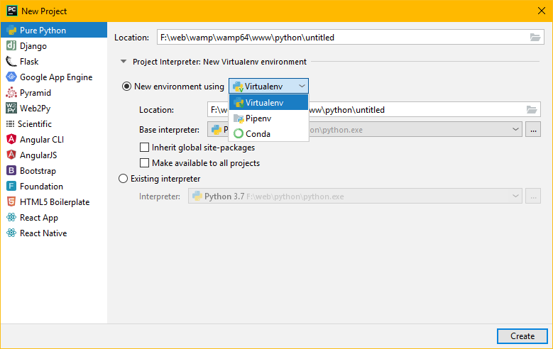
Entornos virtuales
- Python se instala por defecto en el sistema para todos los usuarios.
- Cada proyecto puede tener diferentes dependencias.
- Hay dos aproximaciones: instalar todo en el sistema principal, o crear una caja negra propia de cada proyecto.
- Lo general es crear una caja negra para cada proyecto: entorno virtual.
- Para usar un entorno virtual en un proyecto hay varios pasos
- Creación del entorno virtual con: virtualenv, pipenv o venv
python -m venv c:\ruta\al\entorno\virtual
-
- Activación del entorno virtual bajo Windows
C:\>c:\ruta\al\entorno\virtual\scripts\activate.bat
-
- Instalación de las librerías necesarias con pip dentro del entorno virtual
- Desarrollar de forma normal.
No hacen falta los pasos anteriores si usamos un IDE
2.5. Instalación de Python
La instalación está dirigida sobre todo a Windows sabiendo que la mayoría del alumnado usa este tipo de sistemas, pero para otros sistemas operativos la instalación es igual o más sencilla.
Desde la página https://www.python.org/downloads/ nos descargamos el ejecutable correspondiente (generalmente x64) y lo instalamos. Una vez finalizado sería recomendable establecer las variables de entorno (PATH del sistema) de forma adecuada si no se hace en la instalación:
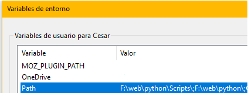
Con estas configuraciones, podremos acceder a una consola Python desde el símbolo de sistema o un terminal ejecutando simplemente Python.
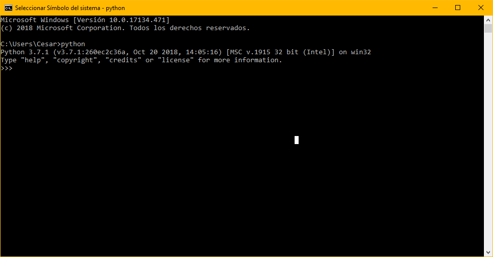
En caso que no deseemos instalar todo desde cero, se puede utilizar la distribución Anaconda de Python, si bien está orientada a la programación científica se puede usar como plataforma de aprendizaje: https://www.anaconda.com/.
En un entorno Unix, la propia distribución incluirá los paquetes necesarios para la instalación. Así en sistemas Debian/Ubuntu será tan sencillo como apt-get install python.
Ejercicio Resuelto
Crear Mi primer programa Python: Hola Mundo
- Abrir una consola del sistema: cmd.exe y ejecutar Python
- Escribir Python en la caja de búsqueda de Windows
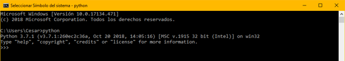
2.6. Entornos IDE
Para el desarrollo de un proyecto Python es altamente recomendable utilizar un IDE que nos proporcione todas las características, si bien no es imprescindible y es posible usar: atom, sublime, etc. como entornos de desarrollo, lo más indicado es utilizar uno. Los IDEs más extendidos a día de hoy son: PyCharm y Microsoft Visual Studio. Este curso usaremos PyCharm.
Si nos encontramos que PyCharm no muestra ni llaves, corchetes, etc. hay que añadir "actionSystem.force.alt.gr=true" al final del fichero bin\idea.properties en el directorio de instalación.
La instalación de PyCharm es bastante sencilla no siendo necesaria ninguna configuración si tenemos instalado antes Python en el sistema.
Resumen
- Un IDE es un entorno de desarrollo que incluye todas las necesidades de programación
- No son imprescindibles, se pude usar un editor avanzado de textos
- Facilitan la labor
- Hay muchos entornos: Microsoft Visual Studio, Eclipse, PyDev, Sypeder, Idle, Sublime, Atom, Pycharm
- Usaremos Pycharm: Licencia educativa.
Instalar PyCharm desde: https://www.jetbrains.com/es-es/pycharm/download/
2.6.1. PyCharm
Uso de Pycharm
IDE Pycharm
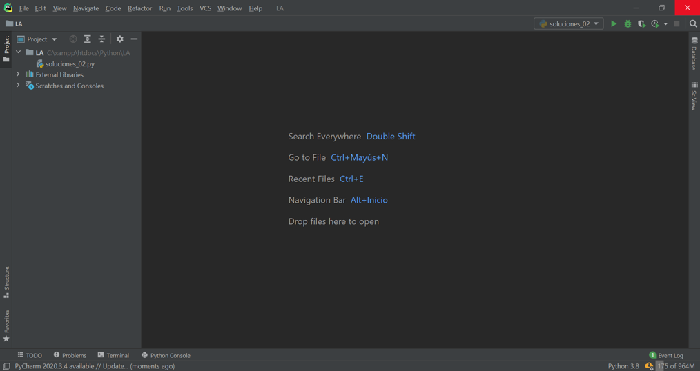
Creación del proyecto
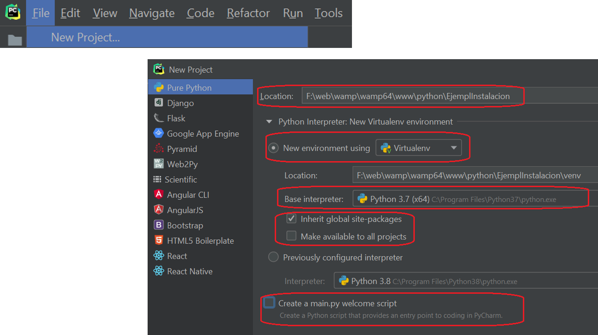
Creación del fichero fuente
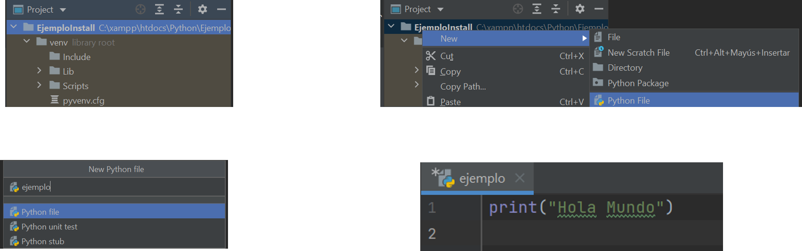
Ejecución y resultado del programa
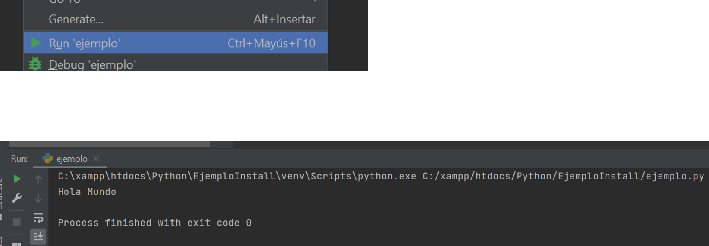
Barras de herramientas de Pycharm
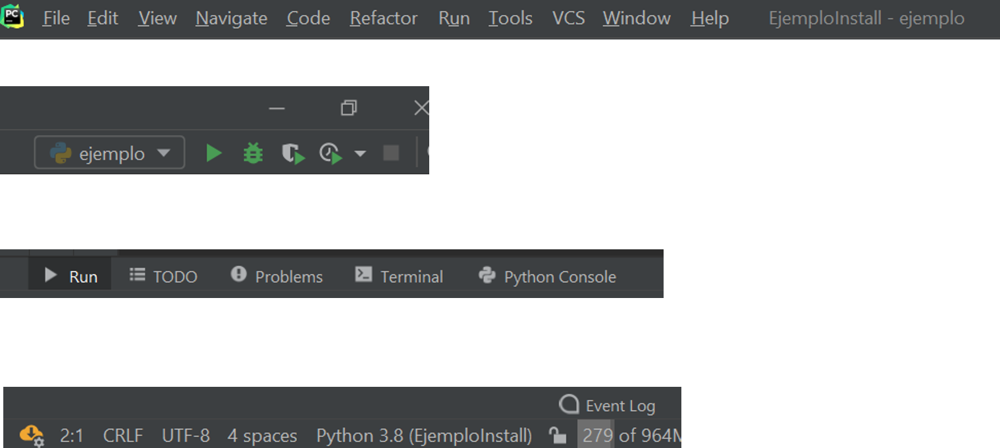
2.7. Estructura general
2.7.1. Introdución
Un programa de Python es un fichero de texto (normalmente guardado con el juego de caracteres UTF-8) que contiene expresiones y sentencias del lenguaje Python. Esas expresiones y sentencias se consiguen combinando los elementos básicos del lenguaje.
2.7.2. Conceptos básicos
- Los ficheros bajo Python se codifican en formato UTF-8 de forma general, pero se puede cambiar añadiendo en la primera línea del fichero fuente la codificación deseada: # -*- coding: cp-1252
- Cada línea representará una instrucción, no hace falta un delimitador final (como en otros lenguajes) ya que la indentación es parte imprescindible de la sintaxis. Así para crear un bloque sintáctico simplemente se indentarán todas las líneas del bloque el mismo número de espacios, marcando la línea principal de bloque con (:) dos puntos. A la hora de indentar no se pueden mezclar tabuladores y espacios, se recomienda usar cuatro espacios para indentar.
- Python usa comentarios de fin de línea exclusivamente, no existe ningún otro tipo de comentario (#). Es posible simular comentarios multilíneas con la notación extendida de representación de cadenas en varias líneas: “““ ”””
- El lenguaje diferencia entre mayúsculas y minúsculas tanto en las palabras clave como en los nombres de variables y funciones.
print("Hola Mundo") # mi primer comentario
# Los comentarios son sólo de fin de línea
for cnt in [1, 2, 3, 4]:
print(cnt)
"""
Aunque de esta manera se puede simular
un comentario de varias líneas sin serlo.
""" 2.7.3. Funciones introductorias
Para poder desarrollar los ejemplos y avanzar de forma adecuada en el conocimiento del lenguaje debemos introducir varias funciones que nos servirán de ayuda.
- print(,,,end=’’). Esta función imprimirá un conjunto de parámetros en una línea por la salida estándar del programa, generalmente la pantalla. El parámetro end indica el último carácter a añadir a la línea en la salida, por defecto \n que hará que salte de línea el siguiente texto.
- input(“texto”). Esta función se utiliza para recoger una cadena de texto del usuario. En caso que el valor a tratar sea numérico es imprescindible realizar la conversión. Utilizará por defecto la entrada estándar del programa.
- str(valor), int(valor) e float(valor) convierten respectivamente a cadena un objeto cualquiera, a entero cualquier valor no numérico y a decimal. En el último caso no convertirá si el valor contiene alguna letra.
- dir(objeto) devuelve la lista de los métodos y propiedades existentes en el objeto.
- type(objeto) devuelve el tipo del objeto.
- pass. No ejecución. Se utiliza para crear bloques vacíos ya que no es posible que se deje un bloque sin instrucciones.
2.7.4. Ejemplo: Ejecutar un programa
Código Fuente
print("Prueba de entrada")
num1 = int(input("Primer Valor:"))
num2 = int(input("Segundo Valor:"))
print("La suma es:", str(num1 + num2))
Creación del proyecto
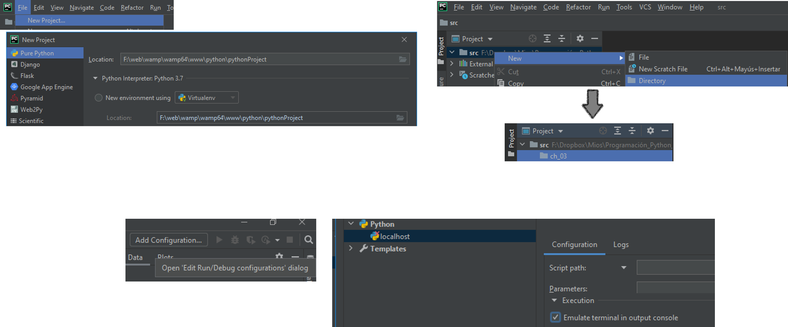
Creación del fichero
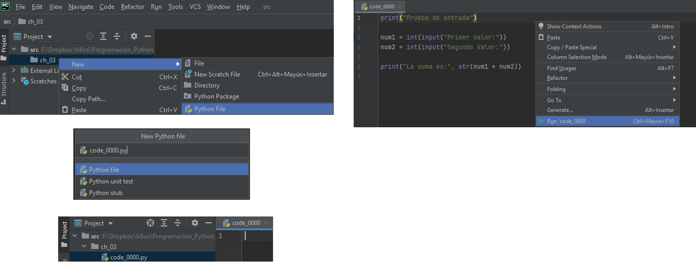
Ejecución
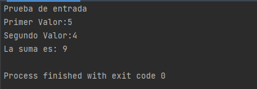
Sin usar un IDE
Hemos procedido a crear un fichero y todas las estructuras necesarias para la ejecución del código, pero no es necesario utilizar un IDE tal y como dijimos anteriormente. Se puede hacer la programación en cualquier editor de texto y ejecutarlo llamando a la orden python nombre_archivo, veámoslo.
- Se abre el editor de texto preferido (write.exe, Notepad.exe, vi, joe, etc.) y se escribe el fichero fuente, almacenándolo en formato UTF-8. Esto último es obligatorio si no queremos que de un error de sintaxis.
- Se abre una consola del sistema (cmd.exe en Windows, bash en Linux).
- Se localiza el fichero fuente con la ruta completa.
- Se ejecuta pasándolo como parámetro a la orden Python.
Explicación del código
- print("Prueba de entrada"). Muestra por pantalla un texto.
- num1 = int(input("Primer Valor:")). Crea una variable llamada num1 y le asigna el valor entero que el usuario introduzca por teclado, si no puede convertirlo dará error.
- num2 = int(input("Segundo Valor:")). Similar pero llamada num2.
- print("La suma es:", str(num1 + num2)). Imprime un texto y el resultado de la operación de sumar las dos variables.
Ejercicios
Ejercicio Resuelto
Hacer un programa que imprima 5
Hacer un programa que pida un número
Hacer un programa que pida un número lo convierta a entero y lo vuelva imprimir
Hacer un programa que muestre los métodos y propiedades de int, str y float
Hacer un programa que muestre los tipo de un número pedido por teclado
Hacer un programa que muestre los tipo de un número pedido por teclado convirtiéndolo a int
2.7.5. Líneas y espacios en blanco
Líneas
- Python interpreta el código a través de líneas lógicas.
- El final de la línea lógica se marca con un ENTER.
- Una línea lógica puede estar compuesta por varias líneas físicas
- Una línea física es una secuencia de caracteres terminadas con ENTER.
- La unión de una o más líneas físicas en una lógica se hace a través del carácter \
- En este caso no puede llevar comentario #
if 1900 < year < 2100 and 1 <= month <= 12 \
and 1 <= day <= 31 and 0 <= hour < 24 \
and 0 <= minute < 60 and 0 <= second < 60:
return 1
- Las expresiones separadas por comas, corchetes, llaves no hace falta el uso de \
month_names = ['Januari', 'Februari', 'Maart', # These are the
'April', 'Mei', 'Juni’] # Dutch names
Espacios en blanco
- Se pueden utilizar tantos espacios en blanco como se desee para separar elementos.
- El número de espacios en blanco en un bloque tiene que ser el mismo pero no está determinado.
- Vamos a usar 4 espacios en blanco para indentar bloques.
- El bloque viene delimitado en la primera línea por :
- Se recomienda no mezclar ni cambiar el número de espacios en un mismo programa.
def perm(l):
# Compute the list of all permutations of l
if len(l) <= 1:
return [l]
r = []
for i in range(len(l)):
s = l[:i] + l[i+1:]
p = perm(s)
for x in p:
r.append(l[i:i+1] + x)
return r
2.7.6. Comentarios
Un comentario comienza con un carácter de almohadilla (#) que no es parte de un literal de cadena y termina al final de la línea física. Los comentarios son ignorados por la sintaxis y se utiliza para documentar o explicar el código fuente.
def perm(l):
# Compute the list of all permutations of l
if len(l) <= 1:
return [l]
r = []
for i in range(len(l)):
s = l[:i] + l[i+1:]
p = perm(s)
for x in p:
r.append(l[i:i+1] + x)
return r
2.7.7. Ejercicios
Ejercicio Resuelto
Diseña un programa que calcule la media de cinco números.
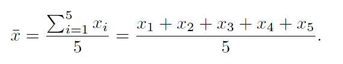
Diseña un programa que calcule la varianza de cinco números.
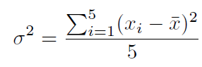
2.7.8. Identificadores
Un identificador es una secuencia de uno o más caracteres asignada por el programador a un elemento del programa (constante, variable, método, clase, paquete...).
Un identificador en Python comienza con una letra (de la A a la Z o de la a a la z) o con un guion bajo (_) seguido de cero o más letras, guiones bajos y números. Python distingue mayúsculas de minúsculas en el nombrado de los identificadores y Python NO permite signos de puntuación como @, $ y %, excepto el guion bajo (_).
Se recomienda nombrar las clases comenzando por una letra mayúscula cada palabra sin espacios y el resto de los identificadores por una letra minúscula separando las palabras con guiones bajos, excepto aquellos que funcionen como constantes que se escribirán en mayúsculas y los identificadores que se definan en las clases como privados empezarán por el guion bajo
def perm(l):
# Compute the list of all permutations of l
if len(l) <= 1:
return [l]
r = []
for i in range(len(l)):
s = l[:i] + l[i+1:]
p = perm(s)
for x in p:
r.append(l[i:i+1] + x)
return r
Ejemplos
Son o no identificadores
_abcAbc
a2387_#_rt
Mi-variable
_
Hola_mundo
1_palabra
Son o no identificadores
_abc
Abc
a2387_#_rt No se permite #
Mi-variable no se permite -
_
Hola_mundo
1_palabra no puede empezar por numero
Nombrado
Todos los identificadores del programa deben seguir las normas que aparecen en la Pep 8.
- Las clases se nombrarán según la siguiente nomenclatura: MiPunto.
- Las variables o propiedades usando nombres: nombre_alumno.
- Las funciones o métodos usando verbos: guardar_datos.
- Las constantes usando nombres en mayúsculas: PI.
2.7.9. Palabras reservadas
Los siguientes identificadores se utilizan como palabras reservadas o palabras clave del lenguaje y no pueden utilizarse como identificadores ordinarios. Deben escribirse exactamente como están escritas aquí:
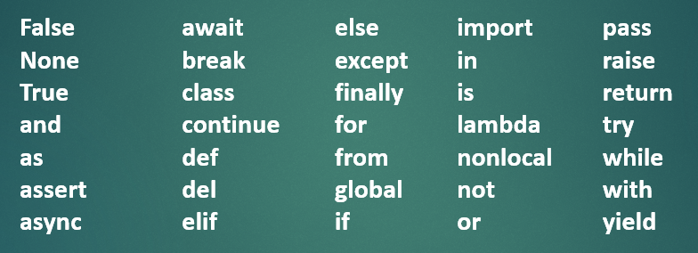
2.7.10. Operadores y expresiones
Un operador es un token que realiza alguna operación sobre uno o más operandos. Los operadores se clasifican según su tipo.
Concatenación
Una de las operaciones más básicas cuando se trabaja con cadenas de caracteres es la concatenación. Esto consiste en unir dos cadenas en una sola, siendo el resultado una nueva cadena.
La forma más simple de concatenar dos cadenas en Python es utilizando el operador de concatenación +:
>>> hola = 'Hola'
>>> python = 'Pythonista'
>>> hola_python = hola + ' ' + python # concatenamos 3 strings
>>> print(hola_python)
Hola Pythonista
Operadores lógicos o booleanos
|
Operación |
Resultado |
Descripción |
|
a or b |
Si a se evalúa a falso, entonces devuelve b, si no devuelve a |
Solo se evalúa el segundo operando si el primero es falso |
|
a and b |
Si a se evalúa a falso, entonces devuelve a, si no devuelve b |
Solo se evalúa el segundo operando si el primero es verdadero |
|
not a |
Si a se evalúa a falso, entonces devuelve True, si no devuelve False |
Tiene menos prioridad que otros operadores no booleanos |
Ejemplo
>>> x = True
>>> y = False
>>> x or y
True
>>> x and y
False
>>> not x
False
>>> x = 0
>>> y = 10
>>> x or y
10
>>> x and y
0
>>> not x
True
Operadores de comparación
Los operadores de comparación se utilizan para comparar dos o más valores. El resultado de estos operadores siempre es True o False.
|
Operador |
Descripción |
|
> |
Mayor que. True si el operando de la izquierda es estrictamente mayor que el de la derecha; False en caso contrario. |
|
>= |
Mayor o igual que. True si el operando de la izquierda es mayor o igual que el de la derecha; False en caso contrario. |
|
< |
Menor que. True si el operando de la izquierda es estrictamente menor que el de la derecha; False en caso contrario. |
|
<= |
Menor o igual que. True si el operando de la izquierda es menor o igual que el de la derecha; False en caso contrario. |
|
== |
Igual. True si el operando de la izquierda es igual que el de la derecha; False en caso contrario. |
|
!= |
Distinto. True si los operandos son distintos; False en caso contrario. |
Ejemplo
>>> x = 9
>>> y = 1
>>> x < y
False
>>> x > y
True
>>> x == y
False
Operadores aritméticos
Permiten realizar las diferentes operaciones aritméticas del álgebra: suma, resta, producto, división, …
|
Operador |
Descripción |
|
+ |
Suma dos operandos. |
|
- |
Resta al operando de la izquierda el valor del operando de la derecha. Utilizado sobre un único operando, le cambia el signo. |
|
* |
Producto/Multiplicación de dos operandos. |
|
/ |
Divide el operando de la izquierda por el de la derecha (el resultado siempre es un float). |
|
% |
Operador módulo. Obtiene el resto de dividir el operando de la izquierda por el de la derecha. |
|
// |
Obtiene el cociente entero de dividir el operando de la izquierda por el de la derecha. |
|
** |
Potencia. El resultado es el operando de la izquierda elevado a la potencia del operando de la derecha. |
Ejemplo
>>> x = 7
>>> y = 2
>>> x + y # Suma
9
>>> x - y # Resta
5
>>> x * y # Producto
14
>>> x / y # División
3.5
>>> x % y # Resto
1
>>> x // y # Cociente
3
>>> x ** y # Potencia
49
Operadores a nivel de bits
Los operadores a nivel de bits actúan sobre los operandos como si fueran una cadena de dígitos binarios. Actúan sobre los operandos bit a bit.
|
Operación |
Descripción |
|
x | y |
or bit a bit de x e y. |
|
x ^ y |
or exclusivo bit a bit de x e y. |
|
x & y |
and bit a bit de x e y. |
|
x << n |
Desplaza x n bits a la izquierda. |
|
x >> n |
Desplaza x n bits a la derecha. |
|
~x |
not x. Obtiene los bits de x invertidos. |
Ejemplo
>>> x = 2
>>> y = 7
>>> x | y
7
>>> x ^ y
5
>>> x & y
2
>>> x << 1
4
>>> x >> 1
1
>>> ~x
-3
Operadores de asignación
El operador de asignación se utiliza para asignar un valor a una variable. Como se ha mencionado en otras secciones, este operador es el signo =.
Además del operador de asignación, existen otros operadores de asignación compuestos que realizan una operación básica sobre la variable a la que se le asigna el valor.
Por ejemplo, x += 1 es lo mismo que x = x + 1. Los operadores compuestos realizan la operación que hay antes del signo igual, tomando como operandos la propia variable y el valor a la derecha del signo igual.
|
Operador |
Ejemplo |
Equivalencia |
|
+= |
x += 2 |
x = x + 2 |
|
-= |
x -= 2 |
x = x - 2 |
|
*= |
x *= 2 |
x = x * 2 |
|
/= |
x /= 2 |
x = x / 2 |
|
%= |
x %= 2 |
x = x % 2 |
|
//= |
x //= 2 |
x = x // 2 |
|
**= |
x **= 2 |
x = x ** 2 |
|
&= |
x &= 2 |
x = x & 2 |
|
|= |
x |= 2 |
x = x | 2 |
|
^= |
x ^= 2 |
x = x ^ 2 |
|
<<= |
x <<= 2 |
x = x << 2 |
|
>>= |
x >>= 2 |
x = x >> 2 |
Operador morsa
Python ha creado un operador de morsa (:=) en la versión 3.8 que permite asignar valores a una variable como parte de una expresión. Se puede realizar gran cantidad de cosas interesantes, pero el mejor aspecto es la reducción de líneas necesarias para tareas muy comunes.
Ahora, en vez de escribir esto:
line = f.readline()
while line:
line = f.readline()
Puedes escribir esto:
while line := f.readline():
Operadores de pertenencia
Los operadores de pertenencia se utilizan para comprobar si un valor o variable se encuentran en una secuencia (list, tuple, dict, set o str).
|
Operador |
Descripción |
|
in |
Devuelve True si el valor se encuentra en una secuencia; False en caso contrario. |
|
not in |
Devuelve True si el valor no se encuentra en una secuencia; False en caso contrario. |
Ejemplo
>>> lista = [1, 3, 2, 7, 9, 8, 6]
>>> 4 in lista
False
>>> 3 in lista
True
>>> 4 not in lista
True
Operadores de identidad
Por último, los operadores de identidad se utilizan para comprobar si dos variables son, o no, el mismo objeto.
|
Operador |
Descripción |
|
is |
Devuelve True si ambos operandos hacen referencia al mismo objeto; False en caso contrario. |
|
is not |
Devuelve True si ambos operandos no hacen referencia al mismo objeto; False en caso contrario. |
Ejemplo
>>> x = 4
>>> y = 2
>>> lista = [1, 5]
>>> x is lista
False
>>> x is y
False
>>> x is 4
True
Prioridad de los operadores en Python
Al igual que ocurre en las matemáticas, los operadores en Python tienen un orden de prioridad. Este orden es el siguiente, de menos prioritario a más prioritario: asignación; operadores booleanos; operadores de comparación, identidad y pertenencia; a nivel de bits y finalmente los aritméticos (con el mismo orden de prioridad que en las matemáticas).
Este orden de prioridad se puede alterar con el uso de los paréntesis ()
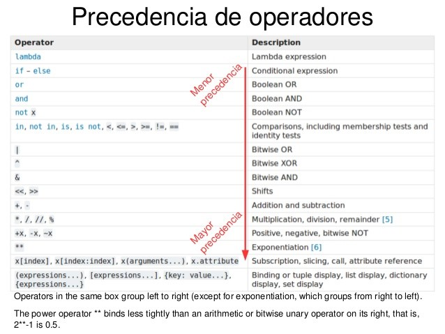
Expresiones
Una expresión es una combinación de valores, variables y operadores. La evaluación de una expresión produce un valor, esta es la razón por la que las expresiones pueden aparecer en el lado derecho de las sentencias de asignación.
Un valor, por sí mismo, se considera como una expresión, lo mismo ocurre para las variables.
Ejemplos
>>> x = 4
>>> y = 2* x + 3 ** 7
>>> x > 5 and y < 7
Ejercicios
Caso práctico
- Mayor de edad y cinco años o más cotizados
- Una manzana es seleccionada si el color es amarillo o rojo y además el diámetro está entre 15 y 25 cm.
- La presión de un balón debe estar entre 3 y 5 bares y la circunferencia no debe pasar de 45 cm
- El número de bolas rojas serán tres si el de amarillas es dos, debe ser cinco si el de amarillas es cinco.
- Para seleccionar un jugador debe medir entre 180 y 210 cm. Si es más alto de 210cm tiene que pesar menos de 120kg. Si es menor de 180cm tiene que saltar más de 50cm.
- Para comprar un vehículo debe ser azul si es un deportivo o verde si es un 4x4, pero si quiero una moto la compraré roja o negra.
- La jubilación se produce a los 67 años con 35 cotizados. a partir de 65 con 40 cotizados y 20 o más continuos
2.7.11. Ejercicios
Ejercicio Resuelto
1. Escribe un programa que dé los “buenos días”.
2. Escribe un programa que calcule y muestre el área de un cuadrado de lado igual a 5.
3. Escribe un programa que calcule el área de un cuadrado cuyo lado se introduce por teclado.
4. Escribe un programa que lea dos números, calcule y muestre el valor de sus suma, resta, producto y división.
5. Escribe un programa que toma como dato de entrada un número que corresponde a la longitud de un radio y nos escribe la longitud de la circunferencia, el área del círculo y el volumen de la esfera que corresponden con dicho radio.
Ejercicio Resuelto
6. Escribe un programa que dado el precio de un artículo y el precio de venta real nos muestre el porcentaje de descuento realizado.
7. Escribe un programa que lea un valor correspondiente a una distancia en millas marinas y escriba la distancia en metros. Sabiendo que una milla marina equivale a 1.852 metros.
8. Calcular el consumo de un coche a los 100 kilómetros dados el gasto en dinero realizado, el precio del litro y el número de kilómetros recorridos.
9. Calcular el coste de la vida dados los precios de tres productos este año y el año pasado.
10. Escribir un programa que pregunte al usuario por el número de horas trabajadas y el coste por hora. Después debe mostrar por pantalla la paga que le corresponde.
2.7.12 Manejo de los datos
Los literales son notaciones para los valores constantes de algunos tipos incorporados, son la representación escrita de los datos.
Literales numéricos
Hay tres tipos de literales numéricos: números enteros, números de punto flotante y números imaginarios. No hay literales complejos (los números complejos pueden formarse sumando un número real y un número imaginario: 4 + 3j).
- Enteros. (enteros, octales 0o, binarios 0b y hexadecimales 0x)
7 2147483647 0o177 0b100110111 3 79228162514264337593543950336 0o377 0xdeadbeef 100000000000 100_000_000_000 0b_1110_0101
- Coma flotante. (notación tradicional o notación científica)
3.14 10. .001 1e100 3.14e-10 0e0 3.14_15_93
- Imaginarios.
3.14j 10.j 10j .001j 1e100j 3.14e-10j 3.14_15_93j
Literales de bytes
Los literales de bytes siempre se prefijan con 'b' o 'B'; y producen una instancia del tipo bytes en lugar del tipo str, por lo que solo pueden contener caracteres ASCII. Los bytes con un valor numérico de 128 o mayor deben ser expresados con secuencias numéricas (\xxxx). Además, los literales de bytes pueden ser prefijados con una letra 'r' o 'R', tales cadenas se llaman raw strings y consideran las barras inversas como caracteres literales.
Ejemplo
b'Espa\xc3\xb1a'.decode(“UTF-8”) # España
b'Espa\xc3\xb1a'.decode(“Latin1”) # España
rb'spam\xddegg' # spam\xddegg
Literales Cadena
Las cadenas (tipo str) en Python pueden ser encerrados entre comillas simples (') o dobles (") pero no se pueden mezclar los delimitadores. También pueden estar encerrados en grupos de tres comillas simples o dobles (a las que generalmente se les llama cadenas de tres comillas) para dividir la cadena en varias líneas físicas.
El carácter de la barra inversa (\) se utiliza para escapar los caracteres que de otra manera tienen un significado especial, como la línea nueva, la barra inversa en sí misma, o el carácter de comillas.
Ejemplo
print('Hola Mundo')
mi_cadena = """Clase que representa
una Persona"""
print(mi_cadena)
print("hola \n \" mundo \" ")
print('hola \n \" mundo \" ')
cadena = "Hola"
cadena[2] = "a" # error son inmutablesLos literales de cadena pueden ser prefijados con una letra 'r' o 'R'; tales cadenas se llaman raw strings y consideran las barras inversas como caracteres literales. A menos que un prefijo 'r' o 'R' esté presente, las secuencias de escape en literales de cadena y bytes se interpretan según reglas similares a las usadas por C estándar. Las secuencias de escape reconocidas son:
|
Secuencia de escape |
Significado |
|
\newline |
Barra inversa y línea nueva ignoradas |
|
\\ |
Barra inversa (\) |
|
\' |
Comilla simple (') |
|
\" |
Comilla doble (") |
|
\a |
ASCII Bell (BEL) |
|
\b |
ASCII Retroceso (BS) |
|
\f |
ASCII Formfeed (FF) |
|
\n |
ASCII Linefeed (LF) |
|
\r |
ASCII Retorno de carro (CR) |
|
\t |
ASCII Sangría horizontal (TAB) |
|
\v |
ASCII Sangría vertical (VT) |
|
\ooo |
Carácter con valor octal oo |
|
\xhh |
Carácter con valor hexadecimal hh |
Se permiten múltiples literales de cadenas adyacentes (delimitados por espacios en blanco), utilizando diferentes convenciones y su significado es el mismo que su concatenación. Por lo tanto, "hola" 'mundo' es equivalente a "holamundo". Esta característica puede ser utilizada para reducir el número de barras inversas necesarias, para dividir largas cadenas convenientemente a través de largas líneas, o incluso para añadir comentarios a partes de las cadenas
2.7.13. Ejercicios
Ejercicio Resuelto
11. Escribir un programa que lea un entero positivo, introducido por el usuario y después muestre en pantalla la suma de todos los enteros desde 1 hasta el número. La suma de los primeros enteros positivos puede ser calculada de la siguiente forma n(n+1)/2
12. Escribir un programa que pida al usuario su peso (en kg) y estatura (en metros), calcule el índice de masa corporal, lo almacene en una variable y muestre por pantalla la frase Tu índice de masa corporal es <imc> donde <imc> es el índice de masa corporal calculado redondeado con dos decimales.
13. Escribir un programa que pida al usuario dos números enteros y muestre por pantalla la <n> entre <m> da un cociente <c> y un resto <r> donde <n> y <m> son los números introducidos por el usuario, y <c> y <r> son el cociente y el resto de la división entera respectivamente.
14. Una juguetería tiene mucho éxito en dos de sus productos: payasos y muñecas. Suele hacer venta por correo y la empresa de logística les cobra por peso de cada paquete así que deben calcular el peso de los payasos y muñecas que saldrán en cada paquete a demanda. Cada payaso pesa 112 g y cada muñeca 75 g. Escribir un programa que lea el número de payasos y muñecas vendidos en el último pedido y calcule el peso total del paquete que será enviado.
15. Imagina que acabas de abrir una nueva cuenta de ahorros que te ofrece el 4% de interés al año. Estos ahorros debido a intereses, que no se cobran hasta finales de año, se te añaden al balance final de tu cuenta de ahorros. Escribir un programa que comience leyendo la cantidad de dinero depositada en la cuenta de ahorros, introducida por el usuario. Después el programa debe calcular y mostrar por pantalla la cantidad de ahorros tras el primer, segundo y tercer años. Redondear cada cantidad a dos decimales.
16. Una panadería vende barras de pan a 3.49€ cada una. El pan que no es el día tiene un descuento del 60%. Escribir un programa que comience leyendo el número de barras vendidas que no son del día. Después el programa debe mostrar el precio habitual de una barra de pan, el descuento que se le hace por no ser fresca y el coste final total.
17. Escribir un programa que solicite al usuario ingresar un número con decimales y almacenarlo en una variable. A continuación, el programa debe solicitar al usuario que ingrese un número entero y guardarlo en otra variable. En una tercera variable se deberá guardar el resultado de la suma de los dos números ingresados por el usuario.
Por último, se debe mostrar en pantalla el texto “El resultado de la suma es [suma]”, donde “[suma]” se reemplazará por el resultado de la operación.
18. Escribir un programa que solicite al usuario el ingreso de una temperatura en escala Fahrenheit (debe permitir decimales) y le muestre el equivalente en grados Celsius. La fórmula de conversión que se usa para este cálculo es: Celsius = (5/9) * (Fahrenheit-32).
19. Escribir un programa que solicite al usuario el ingreso de dos palabras, las cuales se guardarán en dos variables distintas. A continuación, almacenará en una variable la concatenación de la primera palabra, más un espacio, más la segunda palabra. Mostrará este resultado en pantalla.
20. Escribir un programa que solicite al usuario el ingreso de un texto y almacene ese texto en una variable. A continuación, mostrar en pantalla la primera letra del texto ingresado. Luego, solicitar al usuario que ingrese un número positivo menor a la cantidad de caracteres que tiene el texto que ingresó (por ejemplo, si escribió la palabra “HOLA”, tendrá que ser un número entre 0 y 4) y almacenar este número en una variable llamada índice. Mostrar en pantalla el carácter del texto ubicado en la posición dada por índice.
2.7.14. Tipos de datos
En cualquier lenguaje de programación de alto nivel se manejan tipos de datos. Los tipos de datos definen un conjunto de valores que tienen una serie de características y propiedades determinadas. Los tipos de datos básicos de Python son los booleanos, los numéricos (enteros, punto flotante y complejos), el tipo nulo y las cadenas de caracteres. Los tipos de datos complejos los veremos en unidades posteriores.
- Booleanos: True o False
- Nulo
- Numéricos
- Int
- Float
- Irracionales
- Conversiones de tipos: (hex(), oct(), bool(), int(), float(), complex())
- Decimal, precisión necesaria para cálculos financieros y científicos
- Cadenas
- Inicialización con literales
- No existe el concepto de carácter, es una cadena de longitud uno
- Longitud de una cadena: len(cadena)
- El índice de las cadenas empieza en cero
- Son inmutables
- La notación de corchetes se utiliza para rebanadas: [inicio, fin]
- Números positivos desde el principio
- Números negativos desde el fin de la cadena
- Invertir una cadena [::-1]
- Se puede omitir tanto inicio como fin, indicando el primero y el último
- Se pueden usar los operadores + (concatenación) y * (repetición)
print("la" in "!Hola") # True
pal="Una palabra"
print(pal, pal[0],pal[-2]) # Una palabra U r
print(pal[0:2]) # Un
print(pal[4:]) # palabra
print(pal[-3:-1]) # br
print("Una" "Palabra") # UnaPalabra
pal[3]="b" # 'str' object does not support item assignment
print(len(pal))
print(pal*2) # Una PalabraUna Palabra
- Cadenas: formato
- Hay un formato antiguo tipo printf (%) no se aconseja
- El nuevo formato usar el método .format() o los {} en la cadena
- Se antepone la letra f a la cadena para indicar que se debe formatear
- Si no se usa la letra f, se debe llamar al método format con los parámetros
- Cadenas: Formatos: dentro de las llaves
- Un nombre de variable
- Una expresión
- Acceso a un objeto y sus propiedades
- Acceso a los formatos de fecha
import decimal
from datetime import datetime
width = 10
precision = 4
value = decimal.Decimal("12.34567")
print(f"result: {value}")
print(f"result: {value =}") # escribe number_var = valor
print(f"result: {value:{width}.{precision}}") # nested fields
today = datetime(year=2017, month=1, day=27)
print(f"{today:%B %d, %Y}") # using date format specifier
2.7.15. Variables y constantes
- Una variable es un contenedor de valores (generalmente un puntero a una dirección de memoria).
- Las variables son objetos.
- Las reglas de nombrado dictan que deben empezar por letra siempre y que pueden contener números y subrayado (_). Las reglas de estilo de nombrado de variables indican que serán siempre en minúsculas y separadas por un subrayado.
- Las variables no son tipadas, el tipo del contenido de una variable viene determinado en tiempo de ejecución por el contenido, no en tiempo de compilación. Por tanto, no es necesario especificar un tipo a la hora de definir una variable.
- No es necesario definir de forma explícita una variable, se define en el momento del primer uso cuando se le asigne valor, pero vamos a inicializar todas las variables que necesitemos antes de usarlas al comienzo del bloque correspondiente.
- Una variable puede ser eliminada con la función del nombre_variable.
- No se pueden usar las palabras clave de la sintaxis como nombres de variables.
- El contenido de una variable es inmutable, por lo que cuando cambiamos su valor se crea un nuevo objeto con el nuevo valor, se cambia el puntero al nuevo objeto y se libera la memoria del valor (objeto) anterior.
- Existen tipos de datos inmutables: números, cadenas, tuplas que una modificación implicará una creación del nuevo objeto y una asignación a la variable; y tipos mutables que se modifica el objeto directamente: diccionario, lista, conjunto.
- Se pueden definir varias variables en una misma línea usando el operador coma (,) y usar el operador empaquetar (*) en la asignación.
- No existen los valores constantes, se usa la nomenclatura en mayúsculas para indicar un valor que no cambia, pero no se implementa ningún control.
Ejemplo
a, b = 3.5, "Hola"
c = d = 3
a, c = c, a
e, *f = 3, 4, 5, 6 # el asterisco es el resto de valores
*g, h = 7, 8, 9 # el asterisco es el resto de valores
del b
print(a, c , d, e, f, g, h) # 3 3.5 3 3 [4, 5, 6] [7, 8] 9
a, b = b, a # intercambio de variables
VALOR_CTE = 23 # es solo nomenclatura no se controla
print(VALOR_CTE)
VALOR_CTE = 22
print(VALOR_CTE)
2.7.16. Bibliotecas
La biblioteca estándar de Python es muy amplia y ofrece una gran cantidad de facilidades. La biblioteca contiene módulos incorporados que brindan acceso a las funcionalidades del sistema como entrada y salida de archivos que serían de otra forma inaccesibles para los programadores en Python, así como módulos escritos en Python que proveen soluciones estandarizadas para los diversos problemas que pueden ocurrir en el día a día en la programación. Veremos elementos de esta biblioteca a lo largo de todo el curso.
2.7.18. Ejercicios
Ejercicio Resuelto
21. Escribir un programa que solicite al usuario que ingrese cuántos shows musicales ha visto en el último año y almacene ese número en una variable. A continuación, mostrar en pantalla un valor de verdad (True o False) que indique si el usuario ha visto más de 3 shows.
22. Escribir un programa que le solicite al usuario ingresar una fecha formada por 8 números, donde los primeros dos representan el día, los siguientes dos el mes y los últimos cuatro el año (DDMMAAAA). Este dato debe guardarse en una variable con tipo int (número entero). Finalmente, mostrar al usuario la fecha con el formato DD / MM / AAAA.
23. Escribir un programa para solicitar al usuario el ingreso de un número entero y que luego imprima un valor booleano dependiendo de si el número es par o no. Recordar que un número es par si el resto al dividirlo por 2, es 0.
24. Escribí un programa que le solicite al usuario su edad y la guarde en una variable. Que luego solicite la cantidad de artículos comprados en una tienda y la guarde en otra variable. Finalmente, mostrar en pantalla un valor de verdad (True o False) que indique si el usuario es mayor de 18 años de edad y además compró más de 1 artículo.
25. Escribí un programa que, dada una cadena de texto por el usuario, imprima True si la cantidad de caracteres en la cadena es un número impar, o False si no lo es.
26. Escribir un programa para pedir al usuario su nombre y luego el nombre de otra persona, almacenando cada nombre en una variable. Luego mostrar en pantalla un valor de verdad que indique si: los nombres de ambas personas comienzan con la misma letra ó si terminan con la misma letra. Por ejemplo, si los nombres ingresados son María y Marcos, se mostrará True, ya que ambos comienzan con la misma letra. Si los nombres son Ricardo y Gonzalo se mostrará True, ya que ambos terminan con la misma letra. Si los nombres son Florencia y Lautaro se mostrará False, ya que no coinciden ni la primera ni la última letra.
Ejercicio Resuelto
Extra 1: Calcular las soluciones de las raíces de una ecuación de segundo grado, asumiendo que el discriminante es >= 0
Extra 2: Hacer un conversor de divisas: $, € y Libras
Resumen
{"id":"740f12cd-b436-4e23-bf63-492866c943bf","title":"Elementos de un programa","mindmap":{"root":{"id":"bafee856-74a6-42cc-9e53-a0ecc906ccf9","parentId":null,"text":{"caption":"Elementos de un programa","font":{"style":"normal","weight":"bold","decoration":"none","size":20,"color":"#000000"}},"offset":{"x":0,"y":0},"foldChildren":false,"branchColor":"#000000","children":[{"id":"6af6fe12-a5f6-4ebc-8c36-4fb1364c81bb","parentId":"bafee856-74a6-42cc-9e53-a0ecc906ccf9","text":{"caption":"Historia de Python","font":{"style":"normal","weight":"normal","decoration":"none","size":15,"color":"#000000"}},"offset":{"x":-213,"y":-2},"foldChildren":false,"branchColor":"#e4222f","children":[]},{"id":"7988e1c8-69cd-44ad-bedc-f5e48f14bea7","parentId":"bafee856-74a6-42cc-9e53-a0ecc906ccf9","text":{"caption":"Características de Python","font":{"style":"normal","weight":"normal","decoration":"none","size":15,"color":"#000000"}},"offset":{"x":-224,"y":-103},"foldChildren":false,"branchColor":"#638756","children":[{"id":"20484baf-5ab4-4e33-bca9-119a0974f4fd","parentId":"7988e1c8-69cd-44ad-bedc-f5e48f14bea7","text":{"caption":"Fuertemente tipado","font":{"style":"normal","weight":"normal","decoration":"none","size":15,"color":"#000000"}},"offset":{"x":-166,"y":-31},"foldChildren":false,"branchColor":"#638756","children":[]},{"id":"15e3b72b-2bf5-43d5-b532-9abdce981216","parentId":"7988e1c8-69cd-44ad-bedc-f5e48f14bea7","text":{"caption":"Tipado Dinámico","font":{"style":"normal","weight":"normal","decoration":"none","size":15,"color":"#000000"}},"offset":{"x":-165,"y":31},"foldChildren":false,"branchColor":"#638756","children":[]},{"id":"72add403-9ee8-4528-b7db-233de36274f8","parentId":"7988e1c8-69cd-44ad-bedc-f5e48f14bea7","text":{"caption":"Gestor pip paquetes","font":{"style":"normal","weight":"normal","decoration":"none","size":15,"color":"#000000"}},"offset":{"x":-186,"y":93},"foldChildren":false,"branchColor":"#638756","children":[]},{"id":"f4020bdf-d869-4cef-9f9f-04b539cdc7fd","parentId":"7988e1c8-69cd-44ad-bedc-f5e48f14bea7","text":{"caption":"Multisistema y multiplataforma","font":{"style":"normal","weight":"normal","decoration":"none","size":15,"color":"#000000"}},"offset":{"x":-171,"y":-100},"foldChildren":false,"branchColor":"#638756","children":[]}]},{"id":"1b58fe81-9ac7-41ea-8120-d659df58eeed","parentId":"bafee856-74a6-42cc-9e53-a0ecc906ccf9","text":{"caption":"Elementos del lenguaje","font":{"style":"normal","weight":"normal","decoration":"none","size":15,"color":"#000000"}},"offset":{"x":97,"y":122},"foldChildren":false,"branchColor":"#6b5a6f","children":[{"id":"1e9161e8-e20e-47df-b2a4-5aad80e0c936","parentId":"1b58fe81-9ac7-41ea-8120-d659df58eeed","text":{"caption":"Conceptos básicos","font":{"style":"normal","weight":"normal","decoration":"none","size":15,"color":"#000000"}},"offset":{"x":192,"y":-200},"foldChildren":false,"branchColor":"#6b5a6f","children":[]},{"id":"383d45b5-f138-485b-b8b8-1860bde4a61d","parentId":"1b58fe81-9ac7-41ea-8120-d659df58eeed","text":{"caption":"Funciones introductorias","font":{"style":"normal","weight":"normal","decoration":"none","size":15,"color":"#000000"}},"offset":{"x":205,"y":-150},"foldChildren":false,"branchColor":"#6b5a6f","children":[]},{"id":"c590ace6-0f5b-498b-bd01-12136c473fac","parentId":"1b58fe81-9ac7-41ea-8120-d659df58eeed","text":{"caption":"Líneas","font":{"style":"normal","weight":"normal","decoration":"none","size":15,"color":"#000000"}},"offset":{"x":234,"y":-92},"foldChildren":false,"branchColor":"#6b5a6f","children":[]},{"id":"8db227fa-774f-456d-905a-903cbecd3b9a","parentId":"1b58fe81-9ac7-41ea-8120-d659df58eeed","text":{"caption":"Espacios en blanco","font":{"style":"normal","weight":"normal","decoration":"none","size":15,"color":"#000000"}},"offset":{"x":203,"y":-36},"foldChildren":false,"branchColor":"#6b5a6f","children":[]},{"id":"647b8306-4cb5-4da2-8221-a638ccc24eee","parentId":"1b58fe81-9ac7-41ea-8120-d659df58eeed","text":{"caption":"Comentarios","font":{"style":"normal","weight":"normal","decoration":"none","size":15,"color":"#000000"}},"offset":{"x":238,"y":17},"foldChildren":false,"branchColor":"#6b5a6f","children":[]},{"id":"8eede478-405b-4846-85dc-1e9171c758a0","parentId":"1b58fe81-9ac7-41ea-8120-d659df58eeed","text":{"caption":"Identificadores","font":{"style":"normal","weight":"normal","decoration":"none","size":15,"color":"#000000"}},"offset":{"x":227,"y":68},"foldChildren":false,"branchColor":"#6b5a6f","children":[{"id":"ac139429-1dcd-44bb-9ac7-02a4f2732145","parentId":"8eede478-405b-4846-85dc-1e9171c758a0","text":{"caption":"Nombrado","font":{"style":"normal","weight":"normal","decoration":"none","size":15,"color":"#000000"}},"offset":{"x":134,"y":0},"foldChildren":false,"branchColor":"#6b5a6f","children":[]}]},{"id":"24833b0b-2f79-48c4-8b22-c074a775480a","parentId":"1b58fe81-9ac7-41ea-8120-d659df58eeed","text":{"caption":"Palabras reservadas","font":{"style":"normal","weight":"normal","decoration":"none","size":15,"color":"#000000"}},"offset":{"x":210,"y":131},"foldChildren":false,"branchColor":"#6b5a6f","children":[]},{"id":"5853c9c5-2d43-4a73-94ae-a5d9f4d12961","parentId":"1b58fe81-9ac7-41ea-8120-d659df58eeed","text":{"caption":"Operadores","font":{"style":"normal","weight":"normal","decoration":"none","size":15,"color":"#000000"}},"offset":{"x":245,"y":241},"foldChildren":false,"branchColor":"#6b5a6f","children":[{"id":"e0289c92-aea9-4ebf-99b8-a493cc19602e","parentId":"5853c9c5-2d43-4a73-94ae-a5d9f4d12961","text":{"caption":"Concatenación","font":{"style":"normal","weight":"normal","decoration":"none","size":15,"color":"#000000"}},"offset":{"x":158.66666666666666,"y":-36},"foldChildren":false,"branchColor":"#6b5a6f","children":[]},{"id":"7421ac43-8bca-4f34-8a96-f18ecc997982","parentId":"5853c9c5-2d43-4a73-94ae-a5d9f4d12961","text":{"caption":"Booleanos","font":{"style":"normal","weight":"normal","decoration":"none","size":15,"color":"#000000"}},"offset":{"x":184,"y":16},"foldChildren":false,"branchColor":"#6b5a6f","children":[]},{"id":"45ddbb8c-95bd-4b09-b4b9-4c583303c823","parentId":"5853c9c5-2d43-4a73-94ae-a5d9f4d12961","text":{"caption":"Comparación","font":{"style":"normal","weight":"normal","decoration":"none","size":15,"color":"#000000"}},"offset":{"x":170.66666666666666,"y":77.33333333333333},"foldChildren":false,"branchColor":"#6b5a6f","children":[]},{"id":"ac310e86-8911-41da-a072-ba85a2112123","parentId":"5853c9c5-2d43-4a73-94ae-a5d9f4d12961","text":{"caption":"Aritméticos","font":{"style":"normal","weight":"normal","decoration":"none","size":15,"color":"#000000"}},"offset":{"x":157.33333333333334,"y":144},"foldChildren":false,"branchColor":"#6b5a6f","children":[]},{"id":"3eceae7c-7d3a-49e9-b68e-41131b17e931","parentId":"5853c9c5-2d43-4a73-94ae-a5d9f4d12961","text":{"caption":"Nivel de bits","font":{"style":"normal","weight":"normal","decoration":"none","size":15,"color":"#000000"}},"offset":{"x":161.33333333333334,"y":206.66666666666666},"foldChildren":false,"branchColor":"#6b5a6f","children":[]},{"id":"a20cb4d5-acc7-4fd5-8b96-1b9df3765b3e","parentId":"5853c9c5-2d43-4a73-94ae-a5d9f4d12961","text":{"caption":"Asignación","font":{"style":"normal","weight":"normal","decoration":"none","size":15,"color":"#000000"}},"offset":{"x":173.33333333333334,"y":264},"foldChildren":false,"branchColor":"#6b5a6f","children":[]},{"id":"ab843518-cc6a-43e0-b9d2-17b799c240d1","parentId":"5853c9c5-2d43-4a73-94ae-a5d9f4d12961","text":{"caption":"Morsa","font":{"style":"normal","weight":"normal","decoration":"none","size":15,"color":"#000000"}},"offset":{"x":162.66666666666666,"y":321.3333333333333},"foldChildren":false,"branchColor":"#6b5a6f","children":[]},{"id":"8890eea9-2b1f-4586-9a7d-71cb0bca2638","parentId":"5853c9c5-2d43-4a73-94ae-a5d9f4d12961","text":{"caption":"Pertenecia","font":{"style":"normal","weight":"normal","decoration":"none","size":15,"color":"#000000"}},"offset":{"x":164.65625,"y":380},"foldChildren":false,"branchColor":"#6b5a6f","children":[]},{"id":"7de2ed9b-24c1-40bd-aa2b-74c61d81a933","parentId":"5853c9c5-2d43-4a73-94ae-a5d9f4d12961","text":{"caption":"Identidad","font":{"style":"normal","weight":"normal","decoration":"none","size":15,"color":"#000000"}},"offset":{"x":170,"y":450},"foldChildren":false,"branchColor":"#6b5a6f","children":[]},{"id":"49a210c0-a660-4093-b278-4560fa3bd375","parentId":"5853c9c5-2d43-4a73-94ae-a5d9f4d12961","text":{"caption":"Prioridad de los operadores","font":{"style":"normal","weight":"normal","decoration":"none","size":15,"color":"#000000"}},"offset":{"x":176,"y":-116},"foldChildren":false,"branchColor":"#6b5a6f","children":[]}]},{"id":"4deca4d8-b90a-49cb-b459-1e338db7e25b","parentId":"1b58fe81-9ac7-41ea-8120-d659df58eeed","text":{"caption":"Expresiones","font":{"style":"normal","weight":"normal","decoration":"none","size":15,"color":"#000000"}},"offset":{"x":198.66666666666666,"y":322},"foldChildren":false,"branchColor":"#6b5a6f","children":[]}]},{"id":"b884b32b-fb6e-4080-b025-26644804b50c","parentId":"bafee856-74a6-42cc-9e53-a0ecc906ccf9","text":{"caption":"Instalación de Python","font":{"style":"normal","weight":"normal","decoration":"none","size":15,"color":"#000000"}},"offset":{"x":-225,"y":55},"foldChildren":false,"branchColor":"#b1fd75","children":[]},{"id":"d334991e-81f7-41da-aceb-7e2eccb6fd10","parentId":"bafee856-74a6-42cc-9e53-a0ecc906ccf9","text":{"caption":"IDEs","font":{"style":"normal","weight":"normal","decoration":"none","size":15,"color":"#000000"}},"offset":{"x":-191,"y":116},"foldChildren":false,"branchColor":"#0422ec","children":[{"id":"3e0b6561-933f-4ab8-9ef4-62dd01f8eb6b","parentId":"d334991e-81f7-41da-aceb-7e2eccb6fd10","text":{"caption":"Entornos de ejecución","font":{"style":"normal","weight":"normal","decoration":"none","size":15,"color":"#000000"}},"offset":{"x":-165,"y":1},"foldChildren":false,"branchColor":"#0422ec","children":[]}]},{"id":"32117f38-eb03-40c4-9396-271f3c696599","parentId":"bafee856-74a6-42cc-9e53-a0ecc906ccf9","text":{"caption":"Literales","font":{"style":"normal","weight":"normal","decoration":"none","size":15,"color":"#000000"}},"offset":{"x":-144,"y":248},"foldChildren":false,"branchColor":"#1f5e93","children":[{"id":"aa01e823-a40a-472d-86ec-0b1909749517","parentId":"32117f38-eb03-40c4-9396-271f3c696599","text":{"caption":"Numéricos","font":{"style":"normal","weight":"normal","decoration":"none","size":15,"color":"#000000"}},"offset":{"x":-92,"y":-54},"foldChildren":false,"branchColor":"#1f5e93","children":[]},{"id":"a31df2b5-bdce-4ce1-aa90-02cfd9cf2c39","parentId":"32117f38-eb03-40c4-9396-271f3c696599","text":{"caption":"Secuencia de bytes","font":{"style":"normal","weight":"normal","decoration":"none","size":15,"color":"#000000"}},"offset":{"x":-154.28571428571428,"y":10},"foldChildren":false,"branchColor":"#1f5e93","children":[]},{"id":"60307c3c-cef1-4cc7-8098-397bc6329f5f","parentId":"32117f38-eb03-40c4-9396-271f3c696599","text":{"caption":"Cadena","font":{"style":"normal","weight":"normal","decoration":"none","size":15,"color":"#000000"}},"offset":{"x":-154.85714285714286,"y":81.14285714285714},"foldChildren":false,"branchColor":"#1f5e93","children":[]}]},{"id":"41e75863-3ff8-46ac-aa6d-f020d4e3ea78","parentId":"bafee856-74a6-42cc-9e53-a0ecc906ccf9","text":{"caption":"Tipos de datos","font":{"style":"normal","weight":"normal","decoration":"none","size":15,"color":"#000000"}},"offset":{"x":-128,"y":538},"foldChildren":false,"branchColor":"#52ff69","children":[{"id":"99ffa778-0443-4488-ab20-eb185a72c017","parentId":"41e75863-3ff8-46ac-aa6d-f020d4e3ea78","text":{"caption":"Booleanos","font":{"style":"normal","weight":"normal","decoration":"none","size":15,"color":"#000000"}},"offset":{"x":-112.66666666666667,"y":-32},"foldChildren":false,"branchColor":"#52ff69","children":[]},{"id":"aec64c1b-ff1c-4634-97a6-da0b4a505507","parentId":"41e75863-3ff8-46ac-aa6d-f020d4e3ea78","text":{"caption":"Numéricos","font":{"style":"normal","weight":"normal","decoration":"none","size":15,"color":"#000000"}},"offset":{"x":-114,"y":-108},"foldChildren":false,"branchColor":"#52ff69","children":[{"id":"2aa4081a-9506-42a0-b203-c6be12086df8","parentId":"aec64c1b-ff1c-4634-97a6-da0b4a505507","text":{"caption":"Enteros","font":{"style":"normal","weight":"normal","decoration":"none","size":15,"color":"#000000"}},"offset":{"x":-108,"y":-30},"foldChildren":false,"branchColor":"#52ff69","children":[]},{"id":"bb559810-639f-4500-b154-9749a8d0eb0f","parentId":"aec64c1b-ff1c-4634-97a6-da0b4a505507","text":{"caption":"Float","font":{"style":"normal","weight":"normal","decoration":"none","size":15,"color":"#000000"}},"offset":{"x":-116,"y":24},"foldChildren":false,"branchColor":"#52ff69","children":[]},{"id":"69ab4623-fcdb-4328-98e1-d35f6c562b91","parentId":"aec64c1b-ff1c-4634-97a6-da0b4a505507","text":{"caption":"Irracionales","font":{"style":"normal","weight":"normal","decoration":"none","size":15,"color":"#000000"}},"offset":{"x":-132,"y":84},"foldChildren":false,"branchColor":"#52ff69","children":[]}]},{"id":"ae643be9-15b9-4653-8508-21dfb6fa9e69","parentId":"41e75863-3ff8-46ac-aa6d-f020d4e3ea78","text":{"caption":"Cadena","font":{"style":"normal","weight":"normal","decoration":"none","size":15,"color":"#000000"}},"offset":{"x":-136.66666666666666,"y":37.333333333333336},"foldChildren":false,"branchColor":"#52ff69","children":[]}]},{"id":"f1fe4cc8-3efb-4d83-8990-a6951d6be96c","parentId":"bafee856-74a6-42cc-9e53-a0ecc906ccf9","text":{"caption":"Variables","font":{"style":"normal","weight":"normal","decoration":"none","size":15,"color":"#000000"}},"offset":{"x":84,"y":-204},"foldChildren":false,"branchColor":"#769cc9","children":[]},{"id":"e6b6dec9-4d9a-4be1-92a8-6d96212b89bc","parentId":"bafee856-74a6-42cc-9e53-a0ecc906ccf9","text":{"caption":"Constantes","font":{"style":"normal","weight":"normal","decoration":"none","size":15,"color":"#000000"}},"offset":{"x":109.33333333333333,"y":-114},"foldChildren":false,"branchColor":"#5a22df","children":[]},{"id":"a0b3081d-f578-44a9-9fdd-eb8b1ea6359b","parentId":"bafee856-74a6-42cc-9e53-a0ecc906ccf9","text":{"caption":"Bibliotecas","font":{"style":"normal","weight":"normal","decoration":"none","size":15,"color":"#000000"}},"offset":{"x":68,"y":248},"foldChildren":false,"branchColor":"#a548a3","children":[]}]}},"dates":{"created":1639327931609,"modified":1639328965239},"dimensions":{"x":4000,"y":2000},"autosave":false}
...
Obra publicada con Licencia Creative Commons Reconocimiento Compartir igual 4.0